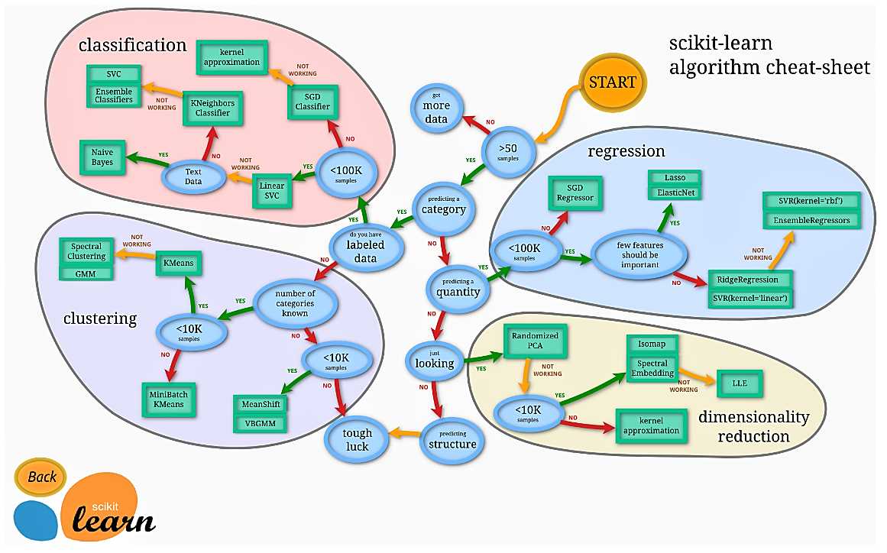
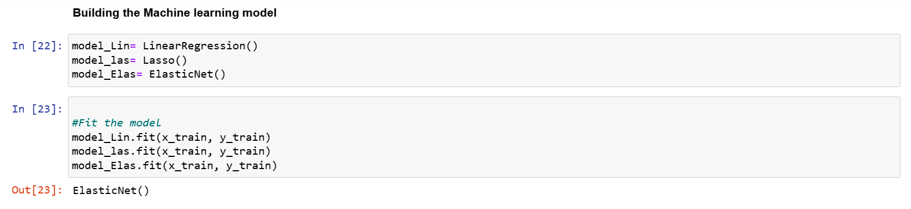

House Price prediction
using the Bayesian, ElasticNet, Lasso regression model
Data Source: Kaggle
Libraries and Packages: Scikit-learn, python-Pandas, Numpy
Problem Template Outcome
1. Understanding the Business problem
2. Data Setup
3. Data Cleaning & Exploratory Data Analysis (EDA)
4. Feature Engineering
5. Choosing an estimator
6. Model Evaluation
7. Saving and Loading
8. Summary of Results
1. Understanding the Business problem
Exploring the features of a House such as the size, number of rooms, location, property type, assessed value, distance to commerce e.t.c informs you of their possible prices. Hence the need to derive a formula that can help infer the prices of both current and potential property type or at least give us a reasonable estimate.2. Data Setup
- Pip installing the dependencies.
- Importing the dataset and required libraries


3. Data Cleaning & Exploratory Data Analysis (EDA)
Exploratory data analysis was done on the datasets to investigate and summarize their main characteristics. This was done using data visualization methods. However, the data was rid of any nulls prior to analysis.

4. Feature Engineering
The features in the dataset was separated into numerical and categorical. This helped in extracting the feature of interest in our model training. In this project, the some of the categorical feature selected was converted into numerical data using the Column transformer before its subjected it into training and testing.
Categorical Features
- Town.
- Property Type
- Residential Type
- Assessed Value(selected).
- Sales Amount(target) The data was split into training and testing.  Check link.
Numerical Features
5. Choosing an Estimator
The estimator selected were the Linear Regression, Lasso and Elastic-Net and fitted into the training and testing data 6. Model Evaluation
The model was evaluated using several scoring metrics to measure the performance of the model on the training data. This was done using the R-squared, Mean Absolute Error (MAE), Mean squared Error.

7. Saving and Loading
The pickle module was used to save the datasets to be deployed.